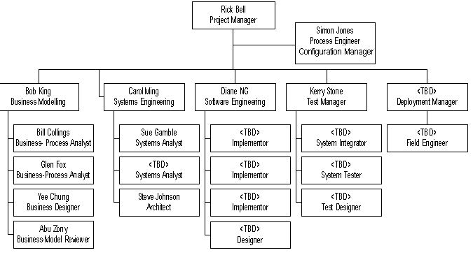

Project Members
The following defines the mapping between persons and roles in the Course Registration System project. The Software Development Plan's Project Organization section provides more details about responsibilities for the different roles.
Each Role in the table below is linked to the page in RUP where the you can read more details about responsibilities.
Project organization structure 

Project members mapped to roles
| Member | Role | Allocation | Phone | Notes |
| Rick Bell | Project Manager | 100 % | ||
| Bob King | Business Modeling Team Lead | 100 % | ||
| Bill Collings | Business Process Analyst | 25 % | ||
| Glen Fox | Business Process Analyst | 25 % | ||
| Yee Chung | Business Designer | 25 % | ||
| Abu Zony | Business-Model Reviewer | 10 % (*) | ||
| Carol Ming | System Engineering Team Lead | 100 % | ||
| Sue Gamble | System Analyst | 75 % | ||
| Steve Johnson | Architect | 100 % | ||
| Diane NG | Software Engineering Team Lead | 50 % | ||
| Diane NG | Designer | 50 % | ||
| Simon Jones | Process Engineer | 50 % | ||
| Simon Jones | Configuration Manager | 50 % | ||
| Kerry Stone | Test Manager | 75 % | ||
The following roles are defined and accounted for in the budget, but currently (Jan 1st -99) these are open positions on the project. |
||||
| <TBD> | Deployment Manager | 100% | ||
| <TBD> | Field Engineer | 75% | ||
| <TBD> | Implementor | 3 x 100% | ||
| <TBD> | System Integrator | 75% | ||
| <TBD> | System Tester | 100% | ||
| <TBD> | Test Designer | 50% | ||
(*) Abu Zony is an external resource hired to help reviewing the Business-model. He participates mainly in the Inception Phase, and in all the formal reviews of the Business Model.
Simon Jones is responsible for the Configuration Management Program at Wylie College IT-department, and plays the role of the Configuration Manager and Change Control Manager as well as the Process Engineer for the Course Registration Project.
The following support staff is not part of the project organization structure. Each of them fills many different roles in this project. Below we list the names and their main responsibilities.
- Laura Twinkel ; Project Management Assistant, User's Guide Editor Assistant, Training Material Coordinator.
- Renee P. Reeves ; Administrative Assistant, Document Reviewer.
For more information on the Project organization, see the Software Development Plan.